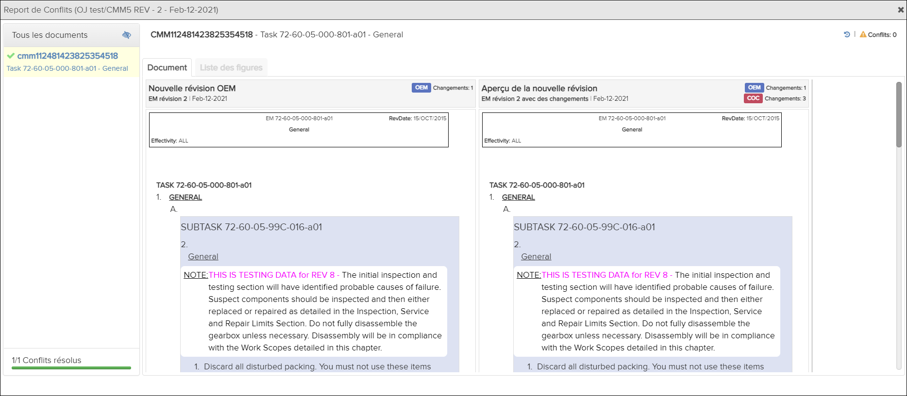
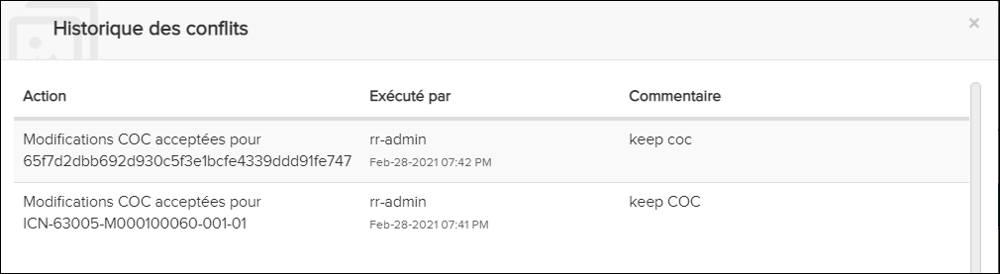

Les utilisateurs disposant du privilège Peut fusionner de nouvelles révisions peuvent auditer les modifications de fusion.
La boîte de dialogue Gestion des publications affiche toutes les révisions et permet aux utilisateurs disposant des droits d'accès appropriés de fusionner les rapports des révisions précédentes. Faire référence à Afficher le rapport de fusion pour plus d'informations.

Report de Conflits- Vue côte à côte

Journal Historique des conflits